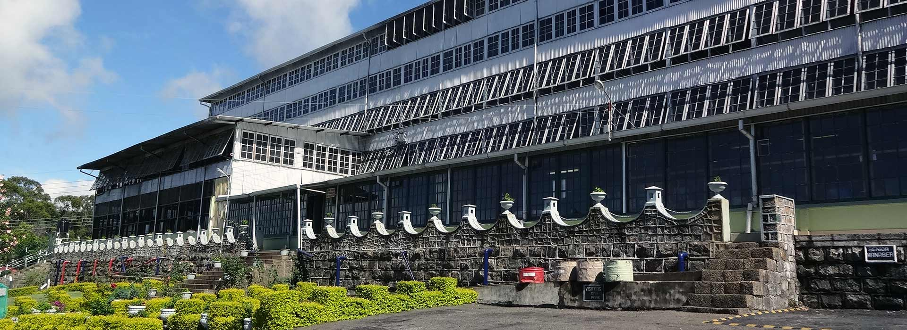

Explore one of Sri Lanka's most historic tea factories, founded by Sir Thomas Lipton in the misty hills of Haputale.
The Dambatenne Tea Factory, located near Haputale, is one of the most iconic tea production sites in Sri Lanka. Established in 1890 by Sir Thomas Lipton, it played a crucial role in making Ceylon tea famous worldwide.
Visitors can walk through the factory and observe the full tea-making process - from fresh leaf collection to drying, rolling, fermenting, and grading. The machinery used here still reflects traditional methods, offering an authentic glimpse into Sri Lanka's tea industry.
Surrounded by vast tea plantations and cool mountain air, the experience is both educational and scenic. It is also located close to Lipton's Seat, making it a perfect stop during your Haputale journey.
Back to Haputale Hub